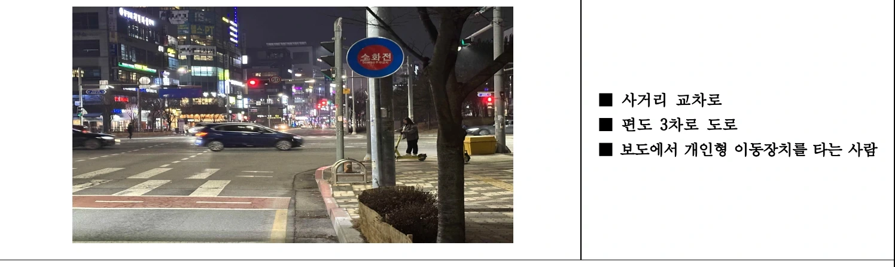

772. Hai cách lái xe nào là không đúng nhất trong tình huống sau?

- ①Khi muốn rẽ phải, tạm dừng ở ngay phía trước vạch dừng rồi mới rẽ phải.
- ②Khi rẽ phải, phải đi chậm sát mép phải của đường trước rồi mới rẽ phải.
- ③Người lái xe rẽ phải phải chú ý đến người đi bộ hoặc xe đạp đang dừng lại hoặc đi theo đèn tín hiệu giao thông.
- ④Khi có người xuống xe, xe chỉ tạm dừng trong chốc lát nên có thể dừng trước trụ cấp nước chữa cháy.
- ⑤Ở đường trong thành phố, dù là ban đêm thì xung quanh vẫn sáng nên không cần bật đèn pha.
Xem đáp án
Đáp án
④ Khi có người xuống xe, xe chỉ tạm dừng trong chốc lát nên có thể dừng trước trụ cấp nước chữa cháy.
⑤ Ở đường trong thành phố, dù là ban đêm thì xung quanh vẫn sáng nên không cần bật đèn pha.
Căn cứ
Khi người điều khiển tất cả các phương tiện muốn rẽ phải tại giao lộ, trước tiên họ phải rẽ phải trong khi lái xe chậm dọc theo mép đường bên phải. Trong trường hợp này, người điều khiển xe rẽ phải phải chú ý đến người đi bộ hoặc xe đạp dừng lại hoặc đi tiếp theo tín hiệu (Điều 25, Khoản 1 Luật Giao thông đường bộ). “Lái xe chậm” là lái xe với tốc độ chậm cho phép người lái xe dừng ngay lập tức ô tô hoặc xe điện (Luật Giao thông đường bộ, Điều 2, Đoạn 28). Từ lúc mặt trời lặn cho đến khi mặt trời mọc, người điều khiển tất cả ô tô hoặc xe điện phải bật đèn pha, đèn bên, đèn hậu và các đèn khác theo quy định của Nghị định của Tổng thống (Điều 37, Khoản 1, Khoản 1 Luật Giao thông đường bộ).
Phần căn cứ là bản dịch máy để tham khảo.